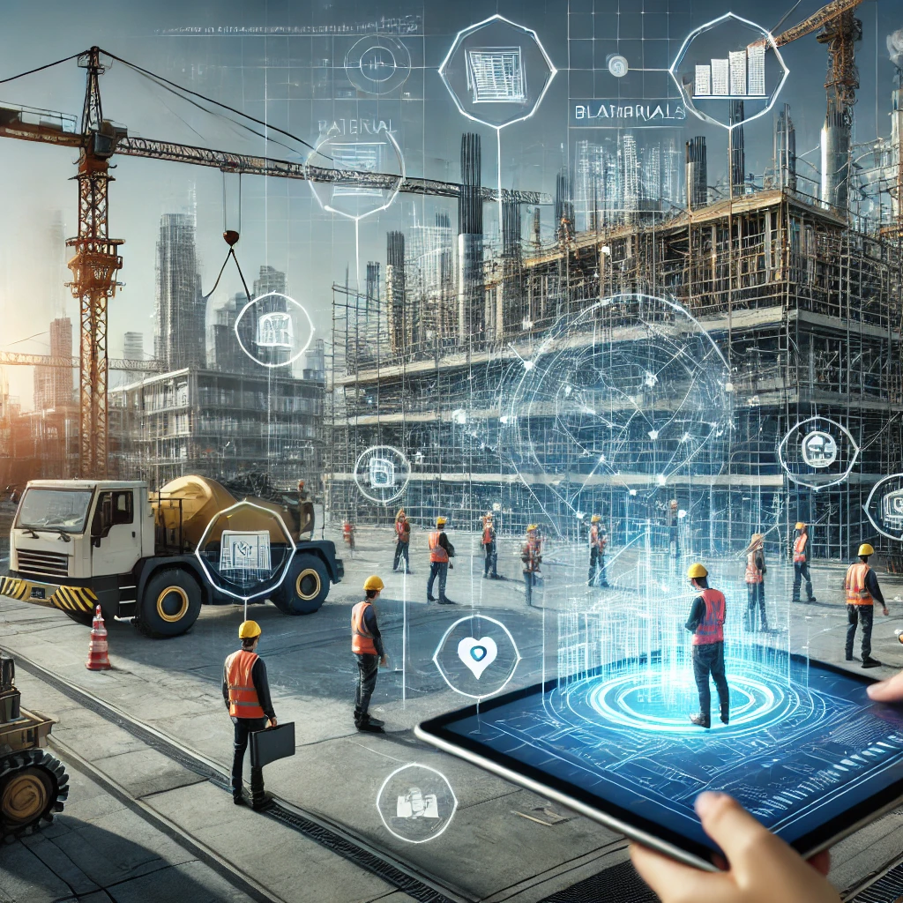

Revolutionizing Construction with Intelligent Systems
Unlock the future of construction with an innovative approach powered by the intelligence of digital twins. Tekton AI combines advanced simulations and cutting-edge AI to enhance the entire building lifecycle—from concept to completion. Our technology enables seamless planning and execution, turning complex architectural designs into efficient, automated workstreams.
Smart, Connected, and Efficient Construction
Tekton AI’s ecosystem of digital agents works behind the scenes, providing continuous, real-time insights into the critical aspects of the building process. From optimizing material usage to ensuring assembly precision, we ensure every phase of construction is executed with minimal waste and maximum efficiency. Our solution anticipates challenges before they arise, mitigating risks and reducing rework.
Beyond Digital Twins: Dynamic, Self-Learning Systems
Our proprietary algorithms don’t just replicate physical spaces—they transform them. Through intelligent simulations, Tekton AI dissects architectural designs, breaking them down into modular tasks and workflows. The result is a fully connected construction process that evolves dynamically based on on-the-ground data. Whether it’s adjusting to unexpected changes or refining assembly tasks, Tekton AI’s system adapts in real-time, pushing the boundaries of what’s possible.
Optimized for Efficiency, Built for the Future
Tekton AI’s platform is designed to optimize time, cost, and quality in every project. By automating critical decision points and evaluating countless possibilities, we empower teams to make better choices faster. With our AI’s unique ability to integrate environmental data and regulatory compliance into planning, we ensure projects stay on track without sacrificing sustainability or safety.
Intelligent Tools, Collaborative Platforms
Our platform isn’t just for machines—it’s for people. Tekton AI leverages state-of-the-art AI to enhance human decision-making in construction. By providing intuitive, actionable insights through collaborative tools, we give project teams the power to visualize and execute with confidence. From site supervisors to architects, Tekton AI bridges the gap between design and construction, facilitating clear communication and precision at every level.